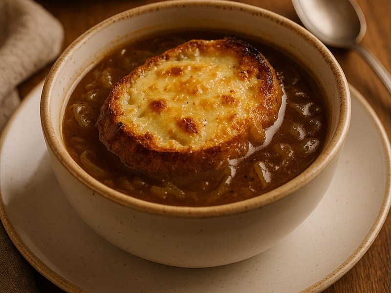

Vorspeise

Französische Zwiebelsuppe
Ein zeitloser Klassiker der französischen Küche. Diese herzhafte Suppe wärmt an kalten Tagen und begeistert mit ihrem intensiven Geschmack.
⏱️ Zubereitungszeit:
45 Minuten
👥 Portionen:
4 Personen
📊 Schwierigkeit:
Mittel
Zutaten:
- 6 große Zwiebeln
- 50g Butter
- 2 EL Olivenöl
- 1 TL Zucker
- 200ml Weißwein
- 1,5l Rinderbrühe
- 2 Lorbeerblätter
- Frischer Thymian
- Salz und Pfeffer
- 8 Scheiben Baguette
- 200g geriebener Gruyère-Käse
Zubereitung:
- Zwiebeln vorbereiten: Die Zwiebeln schälen und in dünne Ringe schneiden. In einem großen Topf Butter und Olivenöl erhitzen.
- Karamellisieren: Die Zwiebelringe bei mittlerer Hitze etwa 20 Minuten langsam karamellisieren lassen. Dabei gelegentlich umrühren und nach 10 Minuten den Zucker hinzufügen.
- Ablöschen: Mit Weißwein ablöschen und einkochen lassen. Die Rinderbrühe zugießen, Lorbeerblätter und Thymian hinzufügen.
- Köcheln: Die Suppe 20 Minuten leise köcheln lassen. Mit Salz und Pfeffer abschmecken.
- Gratinieren: Die Suppe in ofenfeste Suppenschalen füllen. Je 2 Baguettescheiben darauflegen und mit Käse bestreuen. Im vorgeheizten Ofen bei 200°C überbacken, bis der Käse goldbraun ist.
- Servieren: Heiß servieren und den geschmolzenen Käse genießen!
💡 Tipp von Anna Schmidt:
"Das Geheimnis liegt im geduldigen Karamellisieren der Zwiebeln. Nehmen Sie sich Zeit - je dunkler die Zwiebeln, desto intensiver der Geschmack. Ein Schuss Cognac vor dem Servieren verleiht der Suppe eine besondere Note!"